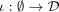
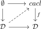
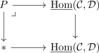

trivial fibration as joyal equivalence
1. Proposition
Let  be the category sSet and
be the category sSet and  a functor between infinity categories.
Suppose
a functor between infinity categories.
Suppose  is a trivial fibration
is a trivial fibration
Then is also a joyal equivalence
2. Proof
use the right lifting property against the monomorphism given by the initial morphism


Consider the following

- postcomposition with a trivial fibration as trivial fibration
- <trivial fibration + pullback>
- terminal sSet as infinity groupoid
 as Kan complex (?)
as Kan complex (?)- TODO
- path component